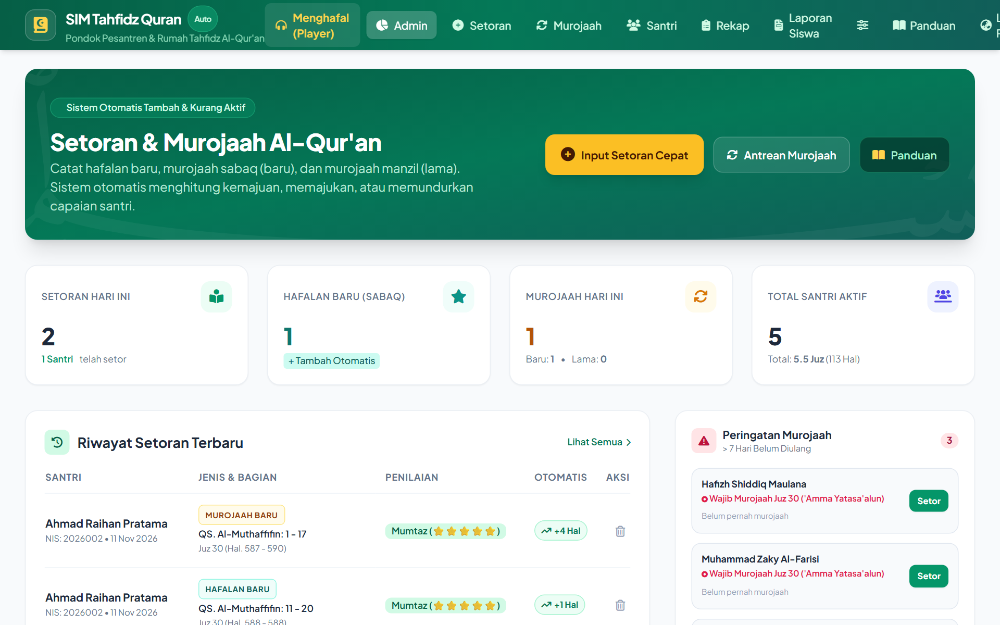

Kombinasi sempurna antara Player Hafalan Santri (Tikrar multi-qari & uji hafalan blind test) dan Sistem Backend Ustadz (penghitung capaian halaman otomatis, murojaah Sabqi-Manzil, visual 30 juz, dan rapor resmi).
* Murni 100% Gratis & Bebas Digunakan oleh Pesantren, Rumah Tahfidz, Sekolah Islam, dan Santri.
Aplikasi SIM Tahfidz Al-Qur'an ini MURNI 100% GRATIS DARI CHATTUTOR (WAKAF DIGITAL) sebagai amal jariyah dan sarana dakwah menjaga kalamullah. Tidak boleh diperjualbelikan atau dikomersialkan oleh siapa pun dalam bentuk apa pun.
🤲 "Doa terbaik semoga seluruh santri penghafal Al-Qur'an menjadi Hafidz & Hafidzah yang mutqin, berakhlak mulia, cerdas, serta istiqomah. Lanjutkan perjuangan mulia ini!"
Gunakan versi desktop di laptop pesantren untuk administrasi lengkap, atau gunakan versi APK di HP untuk fleksibilitas santri dan ustadz di mana saja.

Database Lokal Tersendiri di Memori HP
* Layar slider berganti otomatis setiap 4 detik. Anda juga dapat menekan panah untuk berpindah.
Klik tangkapan layar untuk melihat tampilan ukuran penuh (HD)
Uji langsung simulasi pemutar audio Al-Qur'an per ayat, fitur pengulangan (*Tikrar*), dan coba tombol Uji Hafalan (Blind Test) langsung di browser Anda sekarang!
عَمَّ يَتَسَآءَلُونَ ﴿١﴾
"Tentang apakah mereka saling bertanya-tanya?"
Beginilah cara sistem memproses setoran santri secara otomatis:
Di versi lengkap (APK & PC), semua santri tercatat permanen di database mandiri!
Seluruh fitur dibuat berdasarkan alur riil setoran santri di pondok pesantren dan metode talaqqi para penghafal Al-Qur'an.
Pengulangan ayat otomatis (1x, 3x, 5x, 7x hingga 40x mutqin) dengan jeda waktu (*echo pause*) agar santri dapat menirukan bacaan Qari.
Saat santri lulus, total halaman dan juz otomatis bertambah maju. Jika perlu pengulangan, sistem bisa mengurangi atau menahan posisi hafalan.
Membedakan otomatis antara Murojaah Baru (*Sabqi*) untuk 5 setoran terakhir dan Murojaah Lama (*Manzil*) dengan rotasi cerdas.
Fitur penyamaran/blur teks Arab seketika untuk menguji kemandirian ingatan santri sambil tetap menyelaraskan dengan ketukan audio murottal.
Santri dapat merekam suaranya sendiri dan memutarnya kembali untuk mengevaluasi fashahah, mad, dan makharijul huruf sebelum setoran ke ustadz.
Tinggal install file `.apk`, langsung pakai. Setiap HP punya database internal mandiri, berjalan 100% offline tanpa perlu koneksi internet.
Sudah dilengkapi PHP 8.3 tertanam di dalam folder. Cukup dobel-klik `run.bat` atau `Buka-Aplikasi.vbs`, aplikasi langsung terbuka di laptop mana pun.
Cetak rapor resmi format A4 rapi dengan checklist 30 juz dan kolom tanda tangan ustadz, serta ekspor seluruh data santri ke format spreadsheet Excel.
Membantu santri, ustadz, pengasuh pesantren, dan orang tua dalam memantau kalamullah secara transparan dan teratur.
Pilih versi yang paling sesuai dengan kebutuhan Anda. Seluruhnya gratis dan tanpa biaya tersembunyi.
SIM-Tahfidz-Quran.apk (~7.04 MB)
Bisa langsung dikirim via WA ke santri
Lengkap dengan PHP 8.3 Tertanam
run.bat atau Buka-Aplikasi.vbs.Salin ke laptop/Flashdisk langsung jalan
GitHub Repository & Web App
Bebas fork dan gunakan untuk umat
Hal penting seputar penggunaan dan lisensi aplikasi.
BENAR 100% GRATIS! Aplikasi ini adalah wujud wakaf digital dari ChatTutor.id untuk dakwah Al-Qur'an. Tidak ada biaya berlangganan, tidak ada biaya per santri, dan dilarang keras diperjualbelikan oleh siapa pun.
TIDAK PERLU KUOTA. Versi Android APK dilengkapi database mandiri di HP (*LocalStorage & IndexedDB*). Seluruh proses input setoran, kalkulasi otomatis, dan murojaah dapat berjalan 100% offline tanpa sinyal internet.
Tersedia fitur Cadangkan Database (JSON) di menu Pengaturan. Cukup tekan tombol tersebut, kirimkan file cadangan ke WhatsApp HP baru, lalu pilih Pulihkan Database. Seluruh data hafalan langsung pulih seketika.
SANGAT DIANJURKAN! Silakan bagikan ke seluruh guru ngaji, rumah tahfidz, madrasah, dan pesantren di seluruh penjuru dunia secara cuma-cuma demi syiar kalamullah.